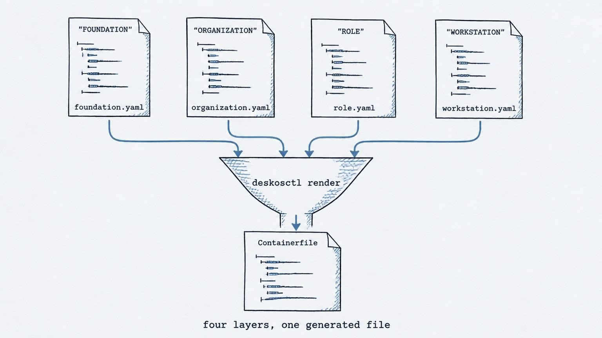
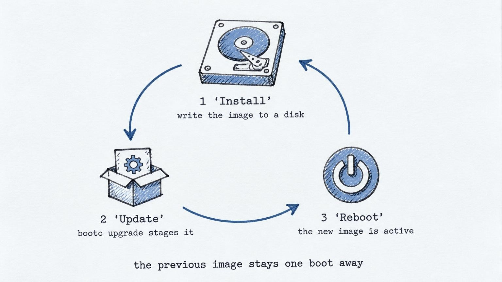

bootc · OCI · deterministic
The desktop
is compiled.
Declared intent becomes a typed plan and a bootable image. Same inputs, same artifact.
01 Compile
YAML in.
One image out.
You describe the machine; DeskOS checks it, merges the layers and writes a generated Containerfile. That file is the whole output: read it, diff it, build it with podman. There is no runtime, no agent and no controller.

deterministic · offline · no scripts · nothing runs on the machine
02 Platforms
Same intent, the vendor's base.
Each platform starts from its own vendor's bootc image — never a derived one — and says what has actually been verified on it. What is not measured is written as not measured.
| Platform | Base | Composes | Image | Booted | Published |
|---|---|---|---|---|---|
| CentOS Stream 10 | centos-bootc | validated | CI | GNOME + session | quay.io/deskos |
| AlmaLinux 10 | almalinux-bootc | validated | CI | GNOME + session | quay.io/deskos |
| Fedora 45 | fedora-silverblue | validated | CI | CI, prerelease | none |
| RHEL 10 | rhel-bootc | validated | by the org | by the org | never |
RHEL-derived images are never published. Fedora is pinned to a prerelease compose; when the released compose lands, the pin moves and the measurement is repeated.
03 Install
Install once.
Update as an image.
The community images are published as bootable containers. Write one to a disk, boot it, and every later update is a new image staged beside the old one — the previous one stays one boot away.
Installer ISOs for the community images are in progress: the
build, the install test and the download site are being prepared. Until then the documented
path is the image and bootc-image-builder.

04 Questions
Before you ask.
Is this a distribution?
No. DeskOS compiles workstations onto the base each vendor already ships. It does not own a kernel, a package archive or a support contract for one.
Does anything of DeskOS run on the machine?
No. DeskOS writes a Containerfile; podman builds it; bootc boots the image. The optional
deskos companion only reports what the image contains.
What does “deterministic” mean?
Same resources, same plan and same Containerfile. The image build is not bit-for-bit reproducible yet, because external repositories move — and the docs say so.
Where are the ISOs?
Being built: compiled from a published digest, installed in a VM to prove it works, then served from a download host. They will appear here when that evidence exists.